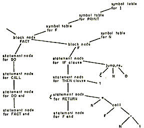
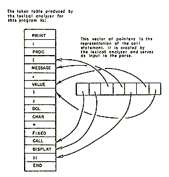
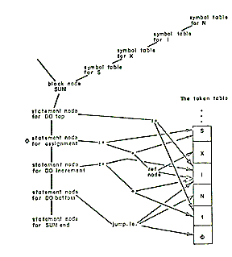
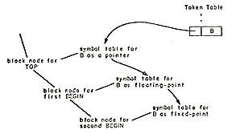
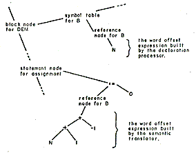
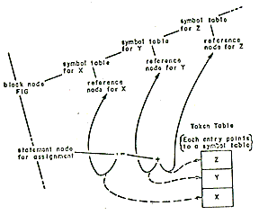
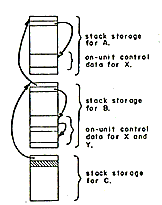
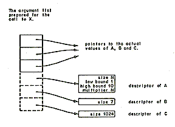

The Multics PL/1 Compiler
by R. A. FREIBURGHOUSE
General Electric Company
Cambridge, Massachusetts
INTRODUCTION
The Multics PL/1 compiler is in many respects a "second generation" PL/1 compiler. It was built at a time when the language was considerably more stable and well defined than it had been when the first compilers were built [1,2]. It has benefited from the experience of the first compilers and avoids some of the difficulties which they encountered. The Multics compiler is the only PL/1 compiler written in PL/1 and is believed to be the first PL/1 compiler to produce high speed object code.
The language
The Multics PL/1 language is the language defined by the IBM "PL/1 Language Specifications" dated March 1968. At the time this paper was written most language features were implemented by the compiler but the run time library did not include support for input and output, as well as several lesser features. Since the multi-tasking primitives provided by the Multics operating system were not well suited to PL/1 tasking, PL/1 tasking was not implemented. Inter-process communication (Multics tasking) may be performed through calls to operating system facilities.
The system environment
The compiler and its object programs operate within the Multics operating system. [3.4,5] The environment provided by this system includes a virtual two dimensional address space consisting of a large number of segments. Each segment is a linear address space whose addresses range from 0 to 64K. The entire virtual store is supported by a paging mechanism, which is invisible to the program. Each program operating in this environment consists of two segments: a text segment containing a pure re-entrant procedure, and a linkage segment containing out-references (links), definitions (entry names), and static storage local to the program. The text segment of each program is sharable by all other users on the system. Linking to a called program is normally done dynamically during program execution.
Implementation techniques
The entire compiler and the Multics operating system were written in EPL, a large subset of PL/1 containing most of the complex features of the language. The EPL compiler was built by a team headed by M. D. McIlroy and R. Morris of Bell Telephone Laboratories. Several members of the Multics PL/1 project modified the original EPL compiler to improve its object code performance, and utilized the knowledge acquired from this experience in the design of the Multics PL/1 compiler. EPL and Multics PL/1 are sufficiently compatible to allow the Multics PL/1 compiler to compile itself and the operating system.
The Multics PL/1 compiler was built and de-bugged by four experienced system programmers in 18 months. All program preparation was done on-line using the CTSS time-sharing System at MIT, Most de-bugging was done in a batch mode on the GE645, but final de-bugging was done on-line using Multics.
The extremely short development time of 18 months was made possible by these powerful tools. The same design programmed in a macro-assembly language using card input and batched runs would have required twice as much time, and the result would have been extremely unmanageable.
Design objectives
The project's design decisions and choice of techniques were influenced by the following objectives:
- A correct implementation of a reasonably complete PL/1 language.
- A compiler which produced relatively fast object code for all language constructs. For similar language constructs, the object code was expected to equal or exceed that produced by most Fortran or COBOL compilers.
- Object program compatibility with EPL object programs and other Multics languages.
- An extensive compile time diagnostic facility.
- A machine independent compiler capable of bootstrapping itself onto other hardware.
The compiler's size and speed were considered less important than the above mentioned objectives. Each phase of the original compiler occupies approximately 32K, but after the compiler bas compiled itself that figure will be about 24K. The original compiler was about twice as slow as the Multics Fortran compiler. The bootstrapped version of the PL/1 compiler is expected to be considerably faster than the original version but it will probably not equal the speed of Fortran.
An overview of the compiler
The Multics PL/1 compiler is designed along traditional lines. It is not an interactive compiler nor does it perform partial compilations. The compiler translates PL/1 external procedures into relocatable binary machine code which may be executed directly or which may be bound together with other procedures compiled by any Multics language processor.
The notion of a phase is particularly useful when discussing the organization of the Multics PL/1 compiler. A phase is a set of procedures which performs a major logical function of compilation, such as syntactic analysis. A phase is not necessarily a memory load or a pass over some data base although it may, in some cases, be either or both of these things.
The dynamic linking and paging facilities of the Multics environment have the effect of making available in virtual storage only those specific pages of those particular procedures which are referenced during an execution of the compiler. A phase of the Multics PL/1 compiler is therefore only a logical grouping of procedures which may call each other. The PL/1 compiler is organized into five phases: Syntactic Translation, Declaration Processing, Semantic Translation, Optimization, and Code Generation.
The internal representation
The internal representation of the program being compiled serves as the interface between phases of the compiler. The internal representation is organized into a modified tree structure (the program tree) consisting of nodes which represent the component parts of the program, such as blocks, groups, statements, operators, operands, and declarations. Each node may be logically connected to any number of other nodes by the use of pointers.
Each source program block is represented in the program tree by a block node which has two lists connected to it: a statement list and a declaration list. The elements of the declaration list are symbol table nodes representing declarations of identifiers within that block. The elements of the statement list are nodes representing the source statements of that block. Each statement node contains the root of a computation tree which represents the operations to be performed by that statement. This computation tree consists of operator nodes and operand nodes.
The operators of the internal representation are n-operand operators whose meaning closely parallels that of the PL/1 source operators. The form of an operand is changed by certain phases, but operands generally refer to a declaration of some variable or constant. Each operand also serves as the root of a computation tree which describes the computations necessary to locate the item at runtime.
This internal representation is machine independent in that it does not reflect the instruction set, the addressing properties, or the register arrangement of the GE645. The first four phases of the compiler are also machine independent, since they deal only with this machine independent internal representation. Figure 1 shows the internal representation of a simple program.
FACT: PROC;
DCL I FIXED, PRINT ENTRY, F ENTRY RETURNS(FIXED), N INT;
DO I = 1 TO 10;
CALL PRINT("Factorial is", F(I));
END;
F: PROC (N) FIXED;
DCL N FIXED;
IF N = 0 THEN RETURN(1);
RETURN(N*F(N-1));
END F;
END FACT;
 |
| Figure 1-The internal representation of a program. The example is greatly simplified. Only the statements of procedure F are shown in detail. |
Syntactic translation
Syntactic analysis of PL/1 programs is slightly more difficult than syntactic analysis of other languages such as Fortran. PL/1 is a larger language containing more syntactic constructs, but it does not present any significantly new problems. The syntactic translator consists of two modules called the lexical analyzer and the parse.
Lexical analysis
The lexical analyzer organizes the input text into groups of tokens which represent a statement. It also creates the source listing file and builds a token table which contains the source representation of all tokens in the source program. A token is an identifier, a constant, an operator or a delimiter. The lexical analyzer is called by the parse each time the parse wants a new statement.
The lexical analyzer is an approximation to a finite state machine. Since the lexical analyzer must produce output as well as recognize tokens, action codes are attached to the state transitions of the finite state machine. These action codes result in the concatenation of individual characters from the output until a recognized token is formed. Constants are not converted to their internal format by the lexical analyzer. They are converted by the semantic translator to a format which depends on the context in which the constant appears.
The token table produced by the lexical analyzer contains a single entry for each unique token in the source program. Searching of the token table is done utilizing a hash coded scheme which provides quick access to the table. Each token table entry contains a pointer which may eventually point to a declaration of the token. For each statement, the lexical analyzer builds a vector of pointers to the tokens which were found in the statement. This vector serves as the input to the parse. Figure 2 shows a simple example of lexical analysis.
PRINT:
PROC(MESSAGE, VALUE);
DCL MESSAGE CHAR(*), VALUE FIXED;
CALL DISPLAY(MESSAGE || VALUE);
END;
 |
| Figure 2-The output of the lexical analyzer |
The parse
The parse consists of a set of possibly recursive procedures, each of which corresponds to a syntactic unit of the language. These procedures are organized to perform a top down analysis of the source program. As each component of the program is recognized, it is transformed into an appropriate internal representation. The completed internal representation is a program tree which reflects the relationships between all of the components of the original source program. Figure 3 shows the results of the parse of a simple program.
 |
| Figure 3-The output of the parse |
Syntactic contexts which yield declarative information are recognized by the parse, and this information is passed to a module called the context recorder which constructs a data base containing this information. Declare statements are parsed into partial symbol table nodes which represent declarations.
The problem of backup
The top down method of syntactic analysis is used because of its simplicity and flexibility. The use of a simple statement recognition algorithm made it possible to eliminate all backup. The statement recognizer identifies the type of each statement before the parse of that statement is attempted. The algorithm used by this procedure first attempts to recognize assignment statements using a left to right scan which looks for token patterns which are roughly analogous to X = or X ( ) =. If a statement is not recognized as an assignment, its leading token is matched against a keyword list to determine the statement type. This algorithm is very efficient and is able to positively identify all legal statements without requiring keywords to be reserved.
Declaration processing
PL/1 declaration processing is complicated by the great variety of data attributes and by the context sensitive manner in which they are derived. Two modules, the context processor and the declaration processor, process declarative information gathered by the parse.
The context processor
The context processor scans the data base containing contextually derived attributes produced during the parse by the context recorder. It either augments the partial symbol table created from declare statements or creates new declarations having the same format as those derived from declare statements. This activity creates contextual and implicit declarations.
The declaration processor
The declaration processor develops sufficient information about the variables of the program so that they may be allocated storage, initialized and accessed by the program's operators. It is organized to perform three major functions: the preparation of accessing code, the computation of each variable's storage requirements, and the creation of initialization code.
The declaration processor is relatively machine independent. All machine dependent characteristics, such as the number of bits per word and the alignment requirements of data types, are contained in a table. All computations or statements produced by the declaration processor have the same internal representation as source language expressions or statements. Later phases of the compiler do not distinguish between them.
The use of based references by the declaration processor
The concept of a based reference is useful to the understanding of PL/1 data accessing and the implementation of a number of language features. A based declaration of the form. DCL A BASED is referenced by a based reference of the form p -> A, where p is a pointer to the storage occupied by a value whose description is given by the declaration of A. Multiple instances of data having the characteristics of A can be referenced through the use of unique pointers, i.e. Q -> A, R -> A, etc.
The declaration processor implements a number of language features by transforming them into suitable based declarations. Automatic data whose size is variable is transformed into a based declaration. For example the declaration:
DCL A(N) AUTO;becomes
DCL A(N) BASED(P);where: p is a compiler produced pointer which is set upon entry to the declaring block.
Based declarations are also used to implement parameters. For example.
X: PROC (C); DCL C;becomes
X: PROC (P); DCL C BASED(P);
where: p is a pointer which points to the argument corresponding to the parameter C.
Data accessing
The address of an item of PL/1 data consists of three basic parts: a pointer to some storage location, a word offset from that location and a bit offset from the word offset. Either or both offsets may be zero. The term "word" is understood to refer to the addressable unit of a computer's storage.
Example 1
DCL A AUTO;
The address of A consists of a pointer to the declaring block's automatic storage, a word offset within that automatic storage and a zero bit offset.
Example 2
DCL 1 S BASED (P), 2 A BIT(5), 2 B BIT(N);
When referenced by P -> B, the address of B is a pointer P, a zero word offset and a bit offset of 5. The word offset may include the distance from the origin of the item's storage class, as was the case with the first example, or it may be only the distance from the level-one containing structure, as it was in the last example. The term "level-one" refers to all variables which are not contained within structures. Subscripted array element references, A(K, J), or sub-string references, SUBSTR(X, K, J), may also be expressed as offsets.
Offset expressions
The declaration processor constructs offset expressions which represent the distance between an element of a structure and the data origin of its level-one containing structure. If an offset expression contains only constant terms, it is evaluated by the declaration processor and results in a constant addressing offset. If the offset expression contains variable terms, the expression results in the generation of accessing instructions in the object program. The discussion which follows describes the efficient creation of these offset expressions.
Given a declaration of the form:
DCL 1 S, 2 A BIT(M), 2 B BIT(5), 2 C FLOAT;
The offset of A is zero, the offset of B is M bits, and the offset of C is M + 5 bits rounded upward to the nearest word boundary.
In general, the offset of the nth item in a structure is:
(...b3(c2(s2) + b2(c1(s1)))...)))
where: bk is a rounding function which expresses the boundary requirement of the kth item. sk is the size of the kth item. ck is the conversion factor necessary to convert sk to some common units such as bits.
The declaration processor suppresses the creation of unnecessary conversion functions (ck) and boundary functions (bk) by keeping track of the current units and boundary as it builds the expression. As a result the offset expressions of the previous example do not contain conversion functions and boundary functions for A and B.
During the construction of the offset expression, the declaration processor separates the constant and variable terms so that the addition of constant terms is done by the compiler rather than by accessing code in the object program. The following example demonstrates the improvement gained by this technique.
DCL 1 S, 2 A BIT(5), 2 B BIT(K), 2 C BIT(6), 2 D BIT(10);
The offset of D is K+11 instead of 5+K+6.
The word offset and the bit offset are developed separately. Within each offset, the constant and variable parts are separated. These separations result in the minimization of additions and unit conversions. If the declaration contains only constant sizes, the resulting offsets are constant. If the declaration contains expressions, then the offsets are expressions containing the minimum number of terms and conversion factors. The development of size and offset expressions at compile time enables the object program to access data without the use of data descriptors or "dope vectors." [6] Most existing PL/1 implementations make extensive use of such descriptors to access data whose size or offsets are variable. Unless these descriptors are implemented by hardware, their use results in rather inefficient object code. The Multics PL/1 strategy of developing offset expressions from the declarations results in accessing code similar to that produced for subscripted array references. This code is generally more efficient than code which uses descriptors.
In general, the offset expressions constructed by the declaration processor remain unchanged until code generation. Two cases are exceptions to this rule: subscripted array references, A(K,J), and sub-string references, SUBSTR(X,K,J). Each subscripted reference or sub-string reference is a reference to a unique sub-datum within the declared datum and, therefore, requires a unique offset. The semantic translator constructs these unique offsets using the subscripts from the reference and the offset prepared by the declaration processor.
Allocation
The declaration processor does not allocate storage for most classes of data, but it does determine the amount of storage needed by each variable. Variables are allocated within some segment of storage by the code generator. Storage allocation is delayed because, during semantic translation and optimization, additional declarations of constants and compiler created variables are made.
Initialization
The declaration processor creates statements in the prologue of the declaring block which will initialize automatic data. It generates DO statements, IF statements and assignment statements to accomplish the required initialization.
The expansion of the initial attribute for based and controlled data is identical to that for automatic data except that the required statements are inserted into the program at the point of allocation rather than in the prologue.
Since array bounds and string sizes of static data are required by the language to be constant, and since all values of the initial attribute of static data must be constant, the compiler is able to initialize the static data at compi1c time. The initialization is done by the code generator at the time it allocates the static data.
Semantic translation
The semantic translator transforms the internal representation so that it reflects the attributes (semantics) of the declared variables without reflecting the properties of the object machine. It makes a single scan over the internal representation of the program. A compiler, which had no equivalent of the optimizer phase and which did not separate the machine dependencies into a separate phase, could conceivably produce object code during this scan.
Organization of the semantic translator
The semantic translator consists of a set of recursive procedures which walk through the program tree. The actions taken by these procedures are described by the general terms: operator transformation and operand processing. Operator transformation includes the creation of an explicit representation of each operator's result and the generation of conversion operators for those operands which require conversion. Operand processing determines the attributes, size and offsets of each operator's operands.
Operator transformation
The meaning of an operator is determined by the attributes of its operands. This meaning specifies which conversions must be performed on the operands, and it decides the attributes of the operator's result.
An operator's result is represented in the program tree by a temporary node. Temporary nodes are a further qualification of the original operator. For example, an add operator whose result is fixed-point is a distinct operation from an add operator whose result is floating-point. There is no storage associated with temporaries--they are allocated either core or register storage by the code generator. A temporary's size is a function of the operator's meaning and the sizes of the operator's operands. A temporary, representing the intermediate result of a string operation, requires an expression to represent its length if any of the string operator's operands have variable lengths.
Operand processing
Operands consist of sub-expressions, references to variables, constants, and references to procedure names or built-in functions. Sub-expression operands are processed by recursive use of operator transformation and operand processing. Operand processing converts constants to a binary format which depends on the context in which the constant was used. References to variables or procedure names are associated with their appropriate declaration by the search function. After the search function has found the appropriate declaration, the reference may be further processed by the subscriptor or function processor.
The Search function
During the parse, it is not possible for references to source program variables to know the declared attributes of the variable because the PL/1 language allows declarations to follow their use. Therefore, references to source program variables are placed into a form which contains a pointer to a token table entry rather than to a declaration of the variable. Figure 3 shows the output of the parse. The search function finds the proper declaration for each reference to a source program variable. The effectiveness of the search depends heavily on the structure of the token table and the symbol table. After declaration processing, the token table entry representing an identifier contains a list of all the declarations of that identifier. See Figure 4.
TOP: PROC;
DCL B POINTER;
BEGIN;
DCL B FLOAT;
BEGIN;
DCL B FIXED;
END;
END;
END;
 |
| Figure 4-The relation between token table and the symbol table |
The search function first tries to find a declaration belonging to the block in which the reference occurred. If it fails to find one, it looks for a declaration in the next containing block. This process is repeated until a declaration is found. Since the number of declarations on the list is usually one, the search is quite fast. In its attempt to find the appropriate declaration, the search function obeys the language rules regarding structure qualification. It also collects any subscripts used in the reference and places them into a subscript list. Depending on the attributes of the referenced item, the subscript list serves as input to the function processor or subscriptor.
The declaration processor creates offset expressions and size expressions for all variables. These expressions, known as accessing expressions, are rooted in a reference node which is attached to a symbol table node. The reference node contains all information necessary to access the data at run time. The search function translates a source reference into a pointer to this reference node. See Figure 5.
DEM: PROC;
DCL 1 S,
2 A(N) FLOAT,
2 B(M) FIXED;
S.B(I) = 0;
END;
 |
| Figure 5-A simplified diagram showing the effects of subscripting |
Subscripting
Since each subscripted reference is unique, its offset expression is unique. To reflect this in the internal representation, the subscriptor creates a unique reference node for each subscripted reference. See Figure 6.
FIG: PROC;
DCL (X, Y, Z) FLOAT;
X + Y + Z;
END;
 |
| Figure 6-The internal representation of a statement before and after the execution of the search function. The broken lines show the statement's operands before the search |
The following discussion shows the relationship between the declared array bounds, the element size, the array offset and subscripts.
Let us consider the case of an array declared :
Its element size is s and its offset is b. The multipliers for the array are defined as:
mn-l = (un - ln + 1)s
mn-2 = (un-1 - ln-1 + 1)mn-1
.
.
.
m1 = (u2 - l2 + 1)m2
The offset of a reference a(i1, i2, ... , in) is computed as:
where: v is the virtual origin. The virtual origin is the offset obtained by setting the subscripts equal to zero. It serves as a convenient base from which to compute the offset of any array elements. During the construction of all expressions, the constant terms are separated from the variable terms and all constant operations are performed by the compiler. Since the virtual origin and the multipliers are common to all references, they are constructed by the declaration processor and are repeatedly used by the subscriptor.
Arrays of PL/1 structures which contain arrays may result in a set of multipliers whose units differ. The declaration:
DCL 1 S(10), 2 A PTR, 2 B(10) BIT(2);yields two multipliers of different units. The first multiplier is the size of an element of S in words, while the second multiplier is the size of an element of B in bits.
Array parameters which may correspond to an array cross section argument must receive their multipliers from an argument descriptor. Since the arrangement of the cross section elements in storage is not known to the called program, it cannot construct its own multipliers and must use multipliers prepared by the calling program. Note that the current definition of PL/1 allows any array parameter to receive a cross section argument.
The function processor
An operand which is a reference to a procedure is expanded by the function processor into a call operator and possible conversion operators. Built-in function references result in new operators or are translated. into expressions consisting of operators and operands.
Generic procedure references
A generic entry name represents a family of procedures whose members require different types of arguments.DCL ALPHA GENERIC ( BETA ENTRY (FIXED)), GAMMA ENTRY(FLOAT)) );A reference to ALPHA (X) will result in a call to BETA or GAMMA depending on the attributes of X.
The declaration processor chains together all members of a generic family and the function processor selects the appropriate member of the family by matching the arguments used in the reference with the declared argument requirements of each member. When the appropriate member is found, the original reference is replaced by a reference to the selected. member.
Argument processing
The function processor matches arguments to user-declared procedures against the argument types required for the procedure. It inserts conversion operators into the program tree where appropriate, and it issues diagnostics when it detects illegal cases.The return value of a function is processed as if it were the n + lth argument to the procedure, eliminating the distinction between subroutines and functions.
The function processor determines which arguments may possibly correspond to a parameter whose size or array bounds are not specified in the called procedure. In this case, the argument list is augmented to include the missing size information. A more detailed description of this issue is given later in the discussion of object code strategies.
The built-in function processor
The built-in function processor is basically a table driven device. The driving table describes the number and kind of arguments required by each function and is used to force the necessary conversions and diagnostics for each argument. Most functions require processing which is unique to that function, but the table driven device minimizes the amount or this processing.The SUBSTR built-in function is of particular importance since it is a basic PL/1 string operator. It is a three argument function which allows a reference to be made to a portion of a string variable, i.e., SUBSTR (X, I, J) is a reference to the ith through i + j -1th character (or bit) in the string x.
This function is similar to an array element reference in the sense that they both determine the offsets of the reference. The processing or the SUBSTR function involves adjusting the offset and length expressions contained in the reference node of X. As is the case in all compiler operations on the offset expressions, the constant and variable terms are separated to minimize the object code necessary to access the data.
The optimizer
The compiler is designed to produce relatively fast object code without the aid of an optimizing phase. Normal execution of the compiler will by-pass the optimizer, but if extensively optimized object code is desired, the user may set a compiler command option which will execute the optimizer. The optimizer consists of a set of procedures which perform two major optimizations: common sub-expression removal and removal of computations from loops. The data bases necessary for these optimizations are constructed by the parse and the semantic translator. These data bases consist of a cross-reference structure of statement labels and a tree structure representing the DO groups of each block. Both optimizations are done on a block basis using these two data bases.
Although the optimizer phase was not implemented at the time this paper was written, all data bases required by the optimizer are constructed by previous phases of the compiler and the abnormality of all variables is properly determined.
Optimization of PL/I programs
The on-condition mechanism of the PL/1 language makes the optimization of PL/1 programs considerably more difficult than the optimization of Fortran programs. Assuming that an optimized version of a program should yield results identical to those produced by the un-optimized version, then if any on-conditions are enabled in a given region of the program, the compiler cannot remove or reorder the computations performed in that region. (Consider the case of a divide by zero on unit which counts the number of times that the condition occurs.)Since some on-conditions are enabled by default, most PL/1 programs cannot be optimized. Because of the difficulty of determining the abnormality of a program's variables, the optimization of those programs which may be optimized requires a rather intelligent compiler. A variable is abnormal in some block if its value can be altered without an explicit indication of that fact present in that block. An optimizing PL/1 compiler must consider all based variables, all arguments to the ADDR function, all defined variables, and all base items of defined variables to be abnormal, If the compiler expects values of variables to be retained throughout the execution of a call, it must also consider all parameters, all external variables, and all arguments of irreducible functions to be abnormal.
Because of the difficulty of optimizing programs written in the current PL/1 language [1] compilers should probably not attempt to perform general optimizations but should concentrate on special case optimizations which are unique to each implementation. Future revisions to the language definition may help solve the optimization problem.
The code generator
The code generator is the machine dependent portion of the compiler. It performs two major functions: it allocates data into Multics segments and it generates 645 machine instructions from the internal representation.
Storage allocation
A module of the code generator called the storage allocator scans the symbol table allocating stack storage for constant size automatic data, and linkage segment storage for internal static data. For each external name the storage allocator creates a link (an out-reference) or a definition (an entry point) in the linkage segment. All internal static data is initialized as its storage is allocated.
Due to the dynamic linking and loading characteristics of the Multics environment, the allocation and initialization of external static storage is rather unusual. The compiler creates a special type of link which causes the linker module of the operating system to create and initialize the external data upon first reference. Therefore, if two programs contain references to the same item of external data, the first one to reference that data will allocate and initialize it.
Code generation
The code generator scans the internal representation transforming it into 645 machine instructions which it outputs into the text segment. During this scan the code generator allocates storage for temporaries, and maintains a history of the contents of index registers to prevent excessive loading and storing of index values.
Code generation consists of three distinct activities: address computation, operator selection and macro expansion. Address computation is the process of transforming the offset expressions of a reference node into a machine address or an instruction sequence which leads to a machine address. Operator selection is the translation of operators into n-operand macros which reflect the properties of the 645 machine.
A one-to-one relationship often exists between the macros and 645 instructions but many operations (load long string, etc.) have no machine counterpart. All macros are expanded in actual 645 code by the macro expander which uses a code pattern table (macro skeletons) to select the specific instruction sequences for each macro.
Object code strategies
The object code design
The design of the object code is a compromise between the speed obtainable by straight in-line code and the necessity to minimize the number of page faults caused by large object programs.The length of the object program is minimized by the extensive use of out-of-line code sequences. These out-of-line code sequences represent invariant code which is common to all Multics PL/1 object programs. Although the compiled code makes heavy use of out-of-line code sequences, the compiled code is not in any respect interpretive. The object code produce for each operator is very highly tailored to the specific attributes of that operator.
All out-of-line sequences are contained in a single "operator" segment which is shared by all users. The in-line code reaches on out-of-line sequence through transfer instructions, rather than through the standard subroutine mechanism. We believe that the time overhead associated with the transfers is more than redeemed by the reduction in the number of page faults caused by shorter object programs. System performance is improved by insuring that the pages of the operator segment are always retained in storage.
The stack
Multics PL/1 object programs utilize a stack segment for the allocation of all automatic data, temporaries, and data associated with on-conditions. Each task (Multics process) has its own stack which is extended (pushed) upon entry to block and is reverted (popped) upon return from a block. Prior to the execution of each statement it is extended to create sufficient space for any variable length string temporaries used in that statement. Constant size temporaries are allocated at compile time and do not cause the stack to be extended for each statement.
Prologue and epilogue
The term prologue describes the computations which are performed after block entry and prior to the execution of the first source statement. These actions include the establishment of the condition prefix, the computation of the size of variable size automatic data, extension of the stack to allocate automatic data, and the initialization of automatic data. Epilogues are not needed because all actions which must be undone upon exit from the block are accomplished by popping the stack. The stack is popped for each return or non-local go to statement.
Accessing of data
Multics PL/1 object code addresses all data, including members of variable sied structures and arrays directly through the use of in-line code. If the address of the data is constant, it is computed at compile time. If it is a mixture of constant and variable terms, the constant terms are combined at compile time. Descriptors are never used to address or allocate data.
String operations
All string operations are done by in-line code or by "transfer" type subroutinized code. No descriptors or calls are produced for string operations. The SUBSTR built-in function is implemented as apart of the normal addressing code and is therefore as efficient as a subscripted array reference.
String temporaries
A string temporary or dummy is designed in such a way that it appears to be both a varying and non-varying string. This means that the programmer does not need to be concerned with whether a string expression is varying or non-varying when he uses such an expression as an argument.
Varying Strings
The Multics PL/1 implementation of varying strings uses a data format which consists of an integer followed by a non-vayring string whose length is the declared maximum of the varying string. The integer is used to hold the current size of the string in bits or characters. Using this data format, operations on vayring strings are just as efficient as operations on non-vayring strings.
On-conditions
The design of the condition machinery minimizes the overhead associated with enabling and reverting on-units and transfers most of the cost to the signal statement. All data associated with on-conditions, including the condition prefix, is allocated in the stack. The normal popping of the stack reverts all enabled on-units and restores the proper condition prefix. Stack storage associated with each block is threaded backward to the previous block. The signal statement uses this thread to search back through the stack looking for the first enabled unit for the condition being signaled. Figure 7 shows the organization of enabled on-units in the stack.
 |
Procedure A enabled an on-unit for condition X and called procedure B. Procedure B enabled an new on-unit for condition X and an on-unit for condition Y. It then called procedure C. Procedure C did not enable any on-units. |
| Figure 7-Stack storage and the signal mechanism A signal for condition X causes the signal mechanism to search back through the stack until it finds the first enabled on-unit for condition X. An on-unit is compiled as an internal procedure. The execution of an ON-statement creates a block of on-unit control data. This control data consists of the name of the condition for which the unit was enabled and a procedure variable. The signal mechanism uses the procedure variable to invoke the on-unit. All data associated with the enabled on-unit is stored in the stack storage of the procedure which enabled it. Normal popping of the stack reverts the on-units enabled during the execution of the procedure. |
|
Argument passing
The PL/1 language permits parameters to be declared with unknown array bounds or string lengths. In these cases, the missing size information is assumed to be supplied by the argument which corresponds to the parameter. This missing size information is not explicitly supplied by the programmer as is the case in Fortran, rather it must be supplied by the compiler as indicated in the following example:
SUB: PROC(A);
.
.
.
DCL A CHAR(*);
.
.
.
|
MAIN: PROC ;
.
.
.
DCL SUB ENTRY;
DCL B CHAR(l0);
CALL SUB(B) ;
.
.
.
|
Since parameter A assumes the length of the argument B, the compiler must include the length of B in the argument list of the call to SUB.
The declaration of an entry name may or may not include a description of the arguments required by that entry. If such a description is not supplied, then the calling program must assume that argument descriptors are needed, and must include them in all cans to the entry. If a complete argument description is contained in the calling program, the compiler can determine if descriptors are needed for calls to the entry.
In the previous example the entry SUB was not fully declared and the compiler was forced to assume that an argument descriptor for B was required. If the entry had been declared SUB ENTRY (CHAR(*)) the compiler could have known that the descriptor of B was actually required by the procedure SUB. Since descriptors are often created by the calling procedure but not used by the called procedure, it is desirable to separate them from the argument information which is always used by the called procedure.
Communication between procedures written in PL/1 and other languages is facilitated if the other languages do not need to concern themselves with PL/1 argument descriptors. The Multics PL/1 implementation of the argument list is shown in Figure 8. Note that the argument pointers point directly to the data (facilitating communication between languages) and that the descriptors are optional, also note that PL/1 pointers must be capable of bit addressing in order to implement unaligned strings. Since descriptors contain no addressing information, they are quite often constant and can be prepared at compile time.
TAG: PROC;
DCL A(10) BIT(N), B CHAR(7), C AREA(1024);
CALL X(A, B, C);
END;
 |
| Figure 8-An argument list showing the relationship between arguments and their descriptors. The broken lines indicate that descriptors are optional. |
SUMMARY
Our experiences both as users and implementors of PL/1 have led us to form a number of opinions and insights which may be of general interest.
- It is feasible, but difficult, to produce efficient object code for the PL/1 language as it is currently defined. Unless a considerable amount of work is invested in a PL/1 compiler, the object code it generates will generally be much worse than that produced by most Fortran or COBOL compilers.
- The difficulty of building a compiler for the current language has been seriously underestimated by most implementors. Unless the language is markedly improved and simplified this problem will continue to restrict the availability and acceptance of the language and will lead to the implementation of incompatible dialects and subsets. [7]
- Simplification of the existing language will make it more suitable to users and implementors. We believe that the language can be simplified and still retain its "universal" character and capabilities.
- The experience of writing the compiler in PL/1 convinced us that a subset of the language is well suited to system programming. This conviction is supported by Professor Corbató in his report on the use of PL/1 as an implementation language for the Multics system. [8] Many PL/1 concepts and constructs are valuable, but PL/1 structures and list processing seem to be the principal improvement over alternative languages. [9]
ACKNOWLEDGMENTS
The author wishes to express recognition to members of the General Electric Multics PL/1 Project for their contributions to the design and implementation of the compiler. J. D. Mills was responsible for the design and implementation of the syntactic analyzer and the Multics system interface, B. L. Wolman designed and built the code generator and operator segment, and G. D. Chang implemented the semantic translator. Valuable advice and ideas were provided by A. H. Kvilekval. The earlier work of M. D. McIlroy and R. Morris of Bell Telephone Laboratories and numerous persons at MIT's Project MAC provided a useful guide and foundation for our efforts.
REFERENCES
- PL1 Language specifications Form Y33-6003-0 IBM Corp March 1968
- The formal definition of PL/1 as specified by technical reports TR25.081, TR25.082, TR25.083, TR25.0S4, TR25.085, TR25.086 and TR25.087, IBM Corp Vienna Austria June 1968
- F J CORBATÓ V A VYSSOTSKY Introduction and overview of the Multics System Proc FJCC 1965
- V A VYSSOTSKY F J CORBATÓ R M GRAHAM Structure of the Multics supervisor Proc FJCC 1965
- R C DALEY J B DENNIS Virtual memory, processes. and sharing in Multics CACM Vol 11 No 5 May 1968
- PL/1 (F) programmer's guide Form C2S-6594-3 IBM Corp Oct 1967
- R F ROSIN PL/1 Implementation survey ACM SIGPLAN Notices Feb 1969
- F J CORBATÓ PL/1 as a tool for system programming Datamation May 1969
- H W LAWSON JR PL/1 List processing CACM Vol 10 No 6 June 1967
1969 Fall Joint Computer Conference
"This material is presented to ensure dissemination of scholarly and technical work. Copyright and all rights therein are retained by authors or by other copyright holders. All persons copying this information are expected to adhere to the terms and constraints invoked by each author's copyright. In most cases, these works may not be reposted without the explicit permission of the copyright holder."